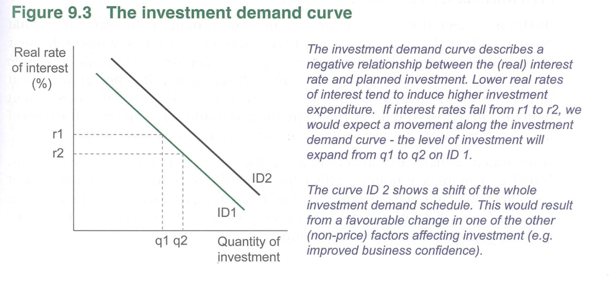

Economista are concerned mainly with why spending changes over the Business Cycle.
Factors Affecting Consumption Spending
see DIGSE - Influences on Consumption
Aka
- Disposible Income () (most significant)
- Interest Rate
- Government Policy
- Stock of Wealth
- Expectations (Consumer / Business)
As Disposable Income rises, the proportion of income spent decreases, and people save more. This is described in the The Consumption Function.
- Disposable income is the most important infleunce on aggregate consumption.
Discretionary consumption is sensitive to Interest Rate changes. it is usually financed through borrowing, for example; Low Interest Rates; Consumption funded via credits (borrowing) require periodic repayments that represent a smaller slice of disposible income, AND, the Opportunity Cost of consumption falls, or in other words, You would rather spend then save, since you get less interest on your savings. High Interest Rates Discretionary consumption postponed since periodic repayments on loans take up a larger part of disposible income. Opportunity Cost of consumptions increases since you COULD instead save your money and get more interest with the high interest rates.
Sentence Explanation
So in a nutshell, if interest rates are low, your loan repayments are cheaper, and your savings are doing less for you in the bank, therefore you may decide to take out a loan for a house, or other things. And if they are high, you postpone discretionary spending because you have to pay back loans you already have that now take up a larger proportion of income. and save whatever is left over since you now get more interest on whatever you save. (i guess you may also want backup money if you think interest rates will continue to rise.)
What is discretionary spending?
Should check what counts as “household discretionary spending”, Housing 100% seems like one but what others? people don’t take out tons of loans for everything all the time, though the mention of ”credit” may also infer credit card debt as well?
Answer Discretionary items = Holidays, Computers, televisions, and motor vehicles (assumedly houses aswell?)
SPICE = Stock of Wealth, Policies of Government, Income, Cost of Credit, Expectations
Stock of Wealth
Households with “Real Assets” (property / shares) feel more confident when their asset prices are rising, thus spend more. when they fall it acts as drag on consumption
#econs-example
Like in 2020 when ASX Index for company value fell from 7144 on Feb 18th to 4735 on 23rd march, a decline of 66.27% in 34 days. this causes a decline of the “Stock of Wealth” on paper for households, thereby changing their spending and saving patters. (these were restored by the end of the financial year).
Consumer Sentiment (expectations)
news about; Economic growth, Changes in Interest Rates, changes in exchange rates, movements in share and property markets. all effect household confience > household spending on non-essentials. It has the greatest impact on discretionary items e.g. holidays, computers, televisions and motor vehicles.
Government Economic Policy
Monetary Policy, like the Cash Rate that influences the bank Interest Rates. ⬆Cash Rate > ⬆Interest Rate > ⬇Household spending power As well as Fiscal Policy which uses tax to influence household & business decisions.
SPICE is not exaustive, other influences include; Changes in exchange rates; distribution of income and wealth; demographic factors (such as age); exogenous events (COVID-19), community movements like climate change advocating for less consumption.
Factors affecting Investment Expenditure
see GRIPE - Investment Influences Investment = Expenditure on capital goods that are used to produce final goods & services in the fturue. it is the most volatile part of aggregate expenditure. ranges between 16-23% of it over last 50 years.
Investment fluctuates based on “perceived” risk, this is influenced by things in the economoy like interest rates, as well as non-economic things like political decisions, consumer sentiment, or international events.
Interest Rates explain a large amount of fluctuations in investment, Ceteris paribus, a negative relationship between them exists, if Interest Rates increase, investment expenditure decreases. This can be seen on the Investment Demand Curve below.

Lower Interest Rates (r) mean higher investment expenditure. If interest rates fall from *r2 to r1, we would expect an expansion in investment demand from q1 to q2. (ignoring the second line ID2 for now).
Why is there an inverse relationship between Investment and Interest Rates?
-
Interest Rates represent the “price of borrowed money”, when I.R is high, periodic repayments rise.
-
Interest Rates represent the Opportunity Cost of money. A Firm can put profits into either, Investment, or some alternative. High Interest Rate increases the opportunity cost of investment thereby making alternatives more appealing. For example if Interest Rates are 8% p.a. the return on capital equiment must exceed 8% before it’s worth it to firms. Capital Investment involves risk as well, so it’s returns must exceed I.R by a considerable margin
A negative relationship exists because when there is high interest rates, “the price of borrowed money” is higher, in the form of higher periodic repayments. And alternatives uses for excess profits become more attractive as interest rates close the gap between them and capital investment.
What are the alternatives?
What are the alternatives to investment? is it just investing money in a bank and waiting for accumulation? #warning#review#ask_davis
Real Interest Rates vs. Nominal Interest Rates
Nominal Interest Rates are the current price of borrowed money Real Interest Rates takes Inflation into account. e.g.
Real rates are more important, since they reflect the ‘true cost’ of borrowing.
The shifting of the ID curve
The shifting of the ID curve represents non-interest rate factors affecting investment. e.g. positive expectations, which would cause a shift from ID1 to ID2.
The reality of the relationship between interest rates & investment
Ref: page=4 The negative relationship between investment & interest rates is not as straightforward as shown on the graph.
Investment may fluctuate against what is expected depending on the “Elasticity” of investment with respect to interest rates. This “Elasticity” is influenced by the current stage of the Business Cycle, and expectations about the future.
Business Cycle Influences on “Elasticity of Investment”
- In a Upswing / Expansion, producers are “upbeat” about future prospects. Therefore investment increases even if Interest Rates are rising.
- In a Downswing / Contraction, lower profits will hold back investment decisions, therefore you end up with less investment. #econs-example Over the period September 2017 to April 2022, interest rates were at historic low levels in Ausralia, yet business investment spending was below average levels. (source, paragraph 2)
Investment is still important during downswings
Higher investment is linked to higher profit. During tough conditions firms often do not invest to buy new capital equipment, leaving old equipment to run down (depreciate). During prosperous conditions, e.g. a Upswing, investment rises, and new capital equipment is sourced, allowing firms so firms purchase new capital equipment. since capital equipment embodies technological advancements, it allows them to achieve lower unit costs through lower production costs and higher efficency with investment, this is why investment is still important in times of low economic activity. (e.g. downswing).
Profitability Influences on Investment Spending
Low Business Profit low retained profit, leading to the “Depreciation” of used capital equipment, thereby making it less efficient. High Business Profit High retained profit to invest in new capital equipment, that also “embodies technological progress” allowing higher efficiency than old equipment, and therefore lower per-unit costs.
Expectations Influences on “Elasticity of Investment”
Business sentiment is influenced by:
- perceived current levels of economic activity
- Trends in the near future e.g. is their inventory rising or lowering? (see The Consumption Function, specifically it’s readjustment to equilibrium)
- Current Levels of sales
- Inquiries from buyers.
a Downturn in these business sentiments coul result in a reduction of planned investment (Planned Investment is on Consumption + Investment Function / AE Model)#review
Government Policies Influences on “Elasticity of Investment”
Changes in taxes mean changes in; - Production Cost - Expected sales revenue Taxes change the risk/reward relationship in that sector. Tax Incentives can attract investment to an industry however.
The government past record of achieving Macro-economic Objectives make business more keen to invest, since they are confident the conomy will remain stable. the past record is important for long-life projects like; construction, mining & transport.
Government regulatory framework also effects the structure of the market & competition. Microeconomic reforms have improved productivity and competitiveness. (see Chapter 14 - something.pdf). Those reforms (hopefully positively) ”impact” the cost of; Business Regulation, Amount of Investment, Openness of markets.
Factors Inflencing Government Expenditure
Most of government spending is on current items;
- G&S consumed by government instituiotions
- Services consumed by government institutions
- Wages & Salaries to employees Otherwise known as G1 Government Spending, this is influenced by the need to fund essential services such as health, defence, education, and social security. these are in-turn dependant on population size. The rest is spent on “Capital Spending”, aka G2 Government Spending, this includes public utilities, like power & water supply, roads, railways, and communications networks. These decisions are also governed by the need to provide appropriate levels of service across all communities.
G2 Capital Spending however is discretionary, the government needs to do them eventually, but may adjust timing based on the state of the economy, e.g. when approaching a peak the government is not likely to do lots of G2 spending as this would worsen supply bottlenecks, and build Inflationary Spending.
Though, (according to the book right side, Para. 4 from top of the page), economic factors are not central to government consumption nor investment decisions. They do however effect policy decisions. (see Chapter 12 - Fiscal Policy.pdf and Chapter 13 - Monetary Policy.pdf)
Factors Influencing Net Exports
exports and imports are “reasonably” volatile components of Aggregate Expenditure. This volatility is very prevelant in australia because of our commodity exports, (aus. comp of trade) This causes volatility since;
- Overseas demand for Australian commodity exports fluctuate according to regional and world economic conditions.
- Domestic Supply of Agricultural and “pastoral” commodities are influenced by seasons and events like droughts
- Exchange Rate
- Domestic and International Economic Growth Australia is also “Elastic” to imports, meaning there will be a greater than proportional rise in exports in respect to GDP. eg. ⬆2% GDP = ⬆ more than 2% Imports This reflects the small size of australia manufacturing sector, since during strong economic activity consumers import goods that can not be produced locally. and businesses buy capital equipment not produced in australia.
Exchange Rate effects on Net Export
-
An appreciation, aka, ⬆AUD means imports imports are cheaper, and thus more competitive against domestic producers. Aus. Exports also become ⬇Internationally Competitive since our currency now costs more to foreigners. Thus ceteris paribus, ⬆AUD aka, an appreciation, has a contractionary effect on Net Exports. and A.E as a whole if ceteris paribus.
-
A depreciation, ⬇AUD, means australian exports are cheaper to foreigners, and thus ⬆International Competitiveness, and ⬇Improts since they are now more expensive. Thus ceteris paribus, a depreciation will have a expansionary effect on N.E & A.E. (the book does not say this explicity however, it goes on to mention it’s dependance on elasticity instead.)
These changes in Exchange Rate are not definite however they all depend on elasticities, aka how buyers react to price changes in australian exports, and how locals react to changes in prices of foreign Imports. e.g. does australia even have an alternative? like for high tech capital.
Terms of Trade’s Effect on Net Exports
Australia’s exports are dominated by mineral and agricultural commodities such as iron ore, coal, wheat, and barley. changes in the prices of these can effect net exports as seen in the examples below.
#econs-example
In the early 2010s, China grew rapidly, and demanded huge amounts of mineral commodities. Thus causing an increase in the export price index, ceteris paribus, export income rises. Mining Companies got a double win from this, They sold more, and charged more. ⬆Prices, ⬆Sales, while simultaneously the import price index fell. (related to cheap asian labour, I assume our increased imports were offset by cheap asian prices.) #econs-example A Falling terms of trade in 2012-2016, sees the prices received for exports fall relative to prices for imports. causing net export receipts likely to fall (net of volume effects)
#econs-example
Terms of Trade has risen strongly again due partly from the war in ukraine, causing increases in the price of Agricultural Commodities.